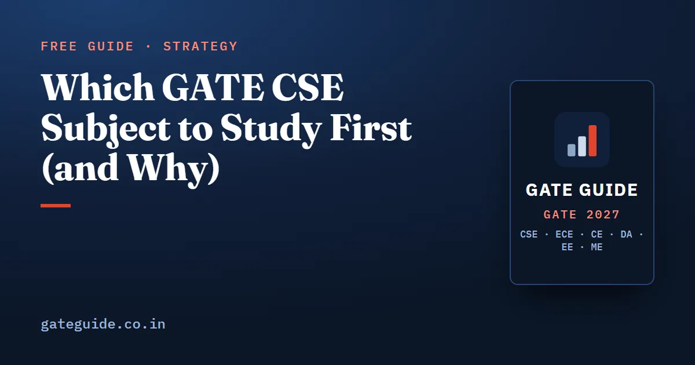

Which GATE CSE Subject to Study First (and Why)

Most GATE plans order subjects by marks. That is half the answer. Marks tell you how much a subject is worth; dependencies tell you when it becomes cheap to learn. Study Computer Organization before Digital Logic and you pay twice for number representation. This guide sets out an order built from both, using the weightage record from past papers and the cross-subject links visible in the question patterns.
In this guide
Key takeaways
- Start with Engineering Mathematics, discrete part first. It is the prerequisite for three other subjects and carries about 13 official marks itself.
- Four dependencies are real: mathematics feeds most subjects, Digital Logic feeds Computer Organization, Programming and Data Structures feeds Algorithms, and Theory of Computation feeds Compiler Design.
- Databases and Computer Networks are the two most self-contained subjects, so they are the natural buffers in any schedule.
- Low-weight subjects are not low priority. Digital Logic and Compiler Design are the most formula-stable in the paper and give the best return per hour.
- General Aptitude is 15 marks and should run in short daily slots from day one, never as a block at the end.
What the weightage record says
These are third-party analyst compilations covering 2009 to 2026, not official data, and they differ by 2 to 3 marks between sources because borderline questions are classified differently. Engineering Mathematics is fixed at about 13 marks by the official pattern and General Aptitude at 15.
| Subject | Average marks per paper | Typical difficulty rating |
|---|---|---|
| Programming and Data Structures | about 9.9 | moderate |
| Operating Systems | about 8.8 | moderate |
| Algorithms | about 8.5 | among the hardest |
| Computer Organization | about 8.5 | moderate, rising weight since 2018 |
| Computer Networks | about 8.2 | moderate |
| Theory of Computation | about 7.8 | among the hardest |
| Databases | about 6.9 | moderate |
| Digital Logic | about 4.8 | rated easiest with General Aptitude |
| Compiler Design | about 4.6 | moderate |
Two long-run movements are worth knowing: Computer Organization has risen from an average near 7.7 before 2018 to about 9.2 since, and Compiler Design has roughly doubled from its 2009 to 2013 level. The full year-by-year table is in the GATE CSE subject-wise weightage guide.
The dependencies that actually bind
| If you study this first | These become much cheaper |
|---|---|
| Discrete mathematics: recurrences, counting, graph theory, logic | Algorithms recurrences and graph theorems; data structure counting; decidability statements in Theory of Computation |
| Probability: expectation, conditional probability | expected probe counts in hashing, scheduling and performance arithmetic |
| Programming in C, recursion, stacks | Algorithms implementations; runtime environments and scoping in Compiler Design |
| Digital Logic: number representation, Boolean algebra, adders | Computer Organization arithmetic units and floating point |
| Computer Organization: memory hierarchy and effective access time | Operating Systems paging, translation buffers and demand paging |
| Theory of Computation: grammars and automata | the whole of parsing in Compiler Design |
| Algorithms: shortest paths | distance vector and link state routing in Computer Networks |
The reverse is also worth stating: Databases depends on nothing else in the paper, and Computer Networks depends only lightly on Algorithms. Those two can be moved to fit your semester or your job.
The order
| Step | Subject | Why here |
|---|---|---|
| Daily | General Aptitude | 15 marks, rated easy every year; belongs in 20-minute daily slots, not in a block |
| 1 | Engineering Mathematics (discrete first, then linear algebra, probability, calculus) | about 13 marks of its own and a prerequisite for three subjects |
| 2 | Programming and Data Structures | highest average technical weight and a prerequisite for Algorithms |
| 3 | Algorithms | about 8.5 marks, rated among the hardest, and it reuses steps 1 and 2 directly |
| 4 | Digital Logic | small, stable and fast, and it sets up the next subject |
| 5 | Computer Organization | about 8.5 marks and rising; needs number representation from step 4 |
| 6 | Operating Systems | about 8.8 marks; its paging and access-time arithmetic is the memory hierarchy again |
| 7 | Theory of Computation | about 7.8 marks, rated hard, and the prerequisite for step 8 |
| 8 | Compiler Design | about 4.6 marks but the best marks per hour once automata are in place |
| 9 | Databases | about 6.9 marks, fully self-contained, safe to place late |
| 10 | Computer Networks | about 8.2 marks, self-contained apart from shortest paths |
Steps 9 and 10 are late only because nothing waits on them, not because they matter less. If your schedule breaks, they are the two you can move without damage. If you are a working candidate or fitting this around a semester, the same order applies at a slower pace; see the six-month study plan and the one-year plan for second and third year students.
How this differs from a marks-only order
The 20-week roadmap in the GATE CSE 2027 book orders the first phase by expected marks: mathematics, then Programming and Data Structures, Algorithms, Operating Systems, Computer Organization, Computer Networks, Theory of Computation with Databases, and Compiler Design, with Digital Logic spread across the later weeks. The order above makes two changes to that: it brings Digital Logic in before Computer Organization, and Computer Organization in before Operating Systems, so that number representation and the memory hierarchy are learned once rather than twice.
Both orders work. The marks-first version gets you to the largest subjects sooner, which matters if you have fewer than twelve weeks. The dependency version costs about a week of sequencing and saves rework, which matters if you have twenty weeks or more. What does not work is a random order driven by which subject feels comfortable on a given evening.
How long to spend on each
At roughly 35 to 40 hours a week, one subject per week is a realistic first pass, with two weeks for mathematics. The standard to reach before moving on is not "I have read it" but a speed test: a page-table calculation in ninety seconds, a fifteen-line C program traced in four minutes, a four-variable minimisation in two minutes. If you already know a subject, spend the first day of its week running that test; if you clear it, use the rest of the week on the subject's second tier rather than jumping ahead.
Once every subject has had its first pass, stop adding first passes. Move to previous-year questions topic by topic, then to full mock tests. A second slow read of a subject you have already covered is the least productive use of a study week, and it is the most common way candidates spend December.
Three ordering mistakes
Leaving General Aptitude for January. It is 15 marks, more than any technical subject, and it is rated easy every year. Twenty minutes a day from the start costs nothing and protects the cheapest marks in the paper.
Dropping Digital Logic and Compiler Design because they are small. Together they average about 9 marks, roughly what Programming and Data Structures carries alone, and their question patterns are the most stable in the paper. A candidate who answers them fully gains more than one who half-answers a larger subject. The evidence for which topics inside them repeat is in most repeated topics in GATE CSE.
Studying Algorithms before recursion and recurrences are solid. Almost every complexity question is a recurrence, and almost every graph question is a counting argument. Coming to them cold turns a moderate subject into the hard one people describe.
Order your subjects this way and each week builds on the last instead of starting over. For the full phase structure from first pass to mock tests, see the GATE CSE 2027 preparation strategy.
Frequently asked questions
Which subject should I start with for GATE CSE?
Engineering Mathematics, and within it discrete mathematics first. It carries about 13 official marks on its own, and its recurrences, counting and graph theory are the machinery that Algorithms, Programming and Data Structures and Theory of Computation all reuse. Starting anywhere else means learning the same ideas twice in different notation.
Does the order of subjects actually matter for GATE CSE?
It matters for about half the paper. Digital Logic feeds Computer Organization, Programming and Data Structures feeds Algorithms, Theory of Computation feeds Compiler Design, and mathematics feeds almost everything. The remaining subjects, chiefly Databases and Computer Networks, are largely self-contained and can be placed wherever your schedule allows.
Which GATE CSE subject has the highest weightage?
In analyst compilations for 2009 to 2026, Programming and Data Structures averages about 9.9 marks, Operating Systems about 8.8, Algorithms and Computer Organization about 8.5 each, and Computer Networks about 8.2. General Aptitude is fixed at 15 marks and Engineering Mathematics at about 13. These subject figures are unofficial and vary by 2 to 3 marks between sources.
Should I study low-weightage subjects like Digital Logic and Compiler Design?
Yes, and fairly early. They average roughly 4.6 and 4.8 marks, but they are the most formula-stable subjects in the paper, so they give the best marks per hour of study. A five-mark subject answered fully moves your rank as much as a ten-mark subject answered half right.
How long should each GATE CSE subject take?
About a week per subject for a first pass at roughly 35 to 40 hours a week, with mathematics taking two weeks and the largest subjects taking the full week for their top-priority topics alone. Plan a first pass of nine to ten weeks, then move to previous-year questions rather than lengthening the first pass.
Sources
- GATE 2027 official website (IIT Madras)
- GATE 2027 CS syllabus (official PDF)
- GATE 2027 question paper pattern (official)
- GeeksforGeeks subject-wise weightage for GATE CS
- gateexam.info subject-wise weightage 2009–2019
Dates, fees and the syllabus are set by the GATE 2027 organising institute and can change. Always confirm at gate2027.iitm.ac.in.